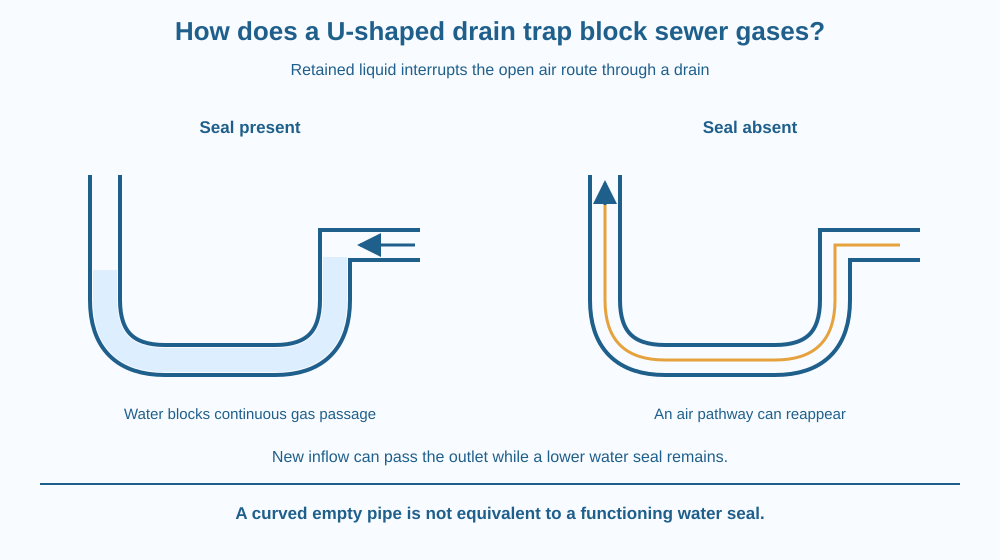

Explain how a U-shaped pipe can retain a water seal between a room and a drain. Distinguish a barrier to gas passage from a filter or a device that destroys gases. Identify why a dry trap can fail and why real drain maintenance belongs to an adult or professional.
Water runs into a sink and leaves through the drain, yet some water intentionally remains in a bend below it. That retained water might look like an obstruction. In fact, it has an important job: it interrupts an open gas route from the drainage system into the room.
Why does the bend stay partly filled after draining? How can more wastewater pass through while a seal remains afterwards? The answer comes from the pipe's shape and the level of its outlet rather than from a chemical that destroys odour molecules.
A trap is a shaped section of drain designed to retain liquid. A common arrangement includes a U-like bend with a rising outlet. After water flows through, the outlet level prevents the bend from simply emptying completely under ordinary conditions.
The retained liquid creates a water seal. There is no continuous open-air path from one side of the bend to the other. Gas would need to displace or pass through the water rather than travel freely along an empty pipe.
The trap is therefore a barrier, not a fine-particle filter. A mesh retains suspended pieces according to its openings. A water seal instead blocks an otherwise open gas route. Confusing those functions can lead to the wrong explanation of why a sink has both a strainer and a trap.
When new water enters, it raises the water level and pushes liquid over the outlet side. After the inflow stops, a suitable amount remains in the low bend. The system can pass wastewater and still restore the liquid barrier afterwards.
A seal is not invincible. If an unused drain loses enough water through evaporation, the bend can become partly or fully dry. A continuous air path may then reappear. That is one reason an unused fitting can behave differently from one regularly supplied with water.
Pressure changes in a poorly functioning drainage system can also disturb a seal. A properly designed system includes appropriate pipe arrangements and ventilation to help manage those effects. The precise design depends on plumbing standards and the installation; this lesson is a conceptual model, not construction guidance.
A trap does not guarantee that every smell originates beyond it or that every drainage problem is solved by adding water. Leaks, blockages, biofilms and other faults can require inspection. An odour is a reason to inform an adult, not an invitation to dismantle a pipe or sniff a drain.
Nor does the water chemically neutralise every gas. The main mechanism is geometric and physical: retained liquid breaks the open pathway. The drain's other parts must still manage waste flow safely, and a water seal does not make sewage or trapped water clean.
Draw a tube that goes down, bends and rises to an outlet. Add water until the bottom bend is covered across its width. Trace a line through the air from the drain side. Stop where the line meets the water.
Now draw the same tube empty. The air line can continue through the bend and out the other side. The difference is the liquid barrier, not the mere existence of a curved pipe.
Finally add an inflow arrow and a matching outflow arrow above the outlet level. Keep a water-filled lower region after the flow ends. This shows how passing water and retaining a seal can happen in the same device.
The SVG compares a water-filled trap with a dry trap. The filled bend has a continuous blue region across the low pipe section. A gas-path arrow stops at that region.
The dry version has an uninterrupted air route through the same pipe shape. Labels identify the inlet, outlet and retained water. A small flow arrow illustrates how incoming water can displace water over the outlet while leaving a seal after flow stops.
The diagram is not a specification for dimensions or fitting positions. It isolates the water-seal principle and leaves actual installation and ventilation requirements to qualified guidance.

Washbasins, sinks and other sanitary fittings can use traps to separate indoor air from drainage routes. Their exact form may differ, but the retained-liquid principle is useful for understanding their purpose.
In a school washroom, a drain left unused over a long holiday may need adult attention before normal use resumes. The lesson suggests a possible mechanism to investigate, not a diagnosis of every odour or an instruction to pour arbitrary chemicals into a fitting.
A kitchen sink strainer and the trap below it solve different problems. One catches larger solids before they enter the pipe; the other maintains a gas barrier. Recognising these functions helps explain why one cannot simply replace the other.
Use paper, a blue pencil and a second colour for air paths. Do not touch plumbing, drain covers or wastewater.
The paper model does not measure the pressure needed to disturb a real seal. Its purpose is to identify whether a continuous open-air route exists. Keep the model clean and conceptual rather than trying to reproduce sewage conditions at home.
Would an empty U-shaped pipe still provide the same barrier? Explain why shape is necessary for retaining water but not sufficient if the liquid is absent.
Now imagine a fitting used regularly and another left unused for months. What variable could change in the second? Identify evaporation as one possibility while leaving room for other installation faults that cannot be diagnosed from the calendar alone.
What is the main role of a water seal in a drain trap?
Answer: A — Retained water blocks the continuous air route through the drain.
Why does some water remain after flow stops?
Answer: B — The low bend below the outlet can retain enough liquid to maintain the seal.
A trap loses enough water during long disuse. What may happen?
Answer: C — Without enough retained water, gas can again have a continuous route through the bend.
Make a two-panel explanation for a school maintenance notice: “Seal present” and “Seal absent.” Mark the water, outlet level and possible air pathway in each panel.
Include an instruction to report odours or drainage problems to a responsible adult. Do not recommend taking pipes apart, mixing cleaning chemicals or handling trapped water. The notice should explain the mechanism while keeping diagnosis and repair in appropriate hands.
Leaving some water behind can be the intended successful outcome of a drain design. A completely empty pipe is not always better. The small retained amount performs a useful barrier function, showing how engineering can depend on controlling where a material remains rather than removing every last drop.
A U-shaped trap retains water that interrupts an open gas pathway; a dry bend has the same shape but can lose that barrier.